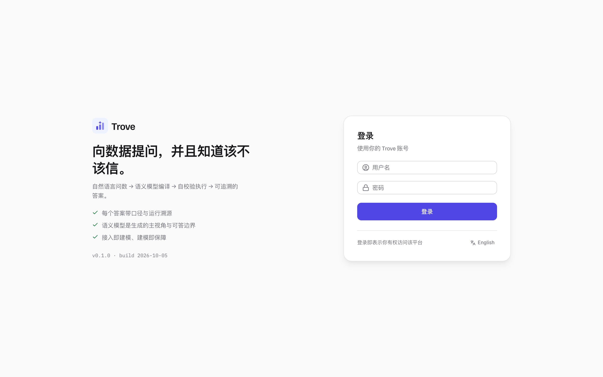
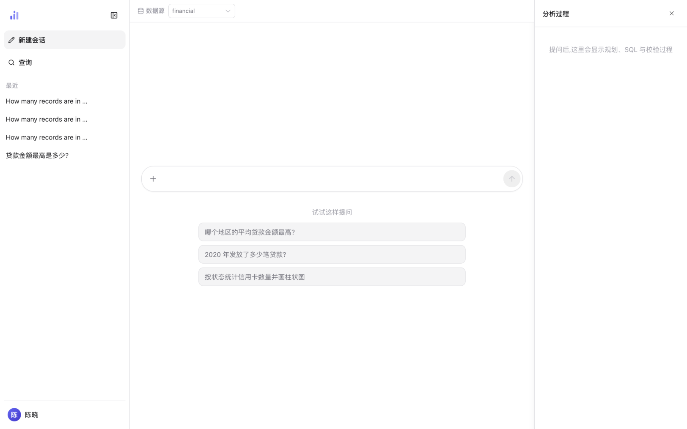

界面导览
用 Trove 只需要一个界面：左边是会话，中间是提问与答案，右边是这次查询的分析过程。 这一页带你走一遍从登录到提出第一个问题的完整界面； 怎么把答案读懂在提问与读懂答案。
登录：从哪来、怎么进
Trove 的每个账号都要由管理员创建（首个 admin 账号在服务启动时按
TROVE_ADMIN_PASSWORD 初始化）。账号带着角色（普通用户 /
分析员 / 管理员）和数据源授权——授权决定了你登录后能看到哪些数据源。

1 2 3- 1用户名与密码——区分大小写，密码错误时提示不区分「账号不存在 / 密码错误」，避免探测账号。
- 2登录按钮。回车提交等效。
- 3界面语言切换（中文 / English）。这只影响界面文案，不改变问答的语言。
登录成功后 token 保存在浏览器本地存储（localStorage.trove_auth_token），
刷新页面不用重新登录。换账号 = 退出后重新登录；管理员可以在管理台
用户与权限里禁用某个账号或改密。
应用外壳：三栏各管什么
登录后就进入问答主界面，固定三栏布局：左侧栏管会话（新建、搜索、切换、 重命名、删除），中间主区是提问与答案，右侧面板是当前这次查询的 分析过程（规划、生成、校验的每一步）。

1 2 3 4 5 6 7- 1数据源选择条——只列出「已连接、知识库已初始化、且你有授权」的数据源；切换它等于切换这次问答的知识边界。
- 2新建会话——开一段干净的上下文；跨会话的记忆只通过知识库沉淀传递，不共享聊天记录。
- 3查询——按标题搜索历史会话（见会话管理）。
- 4最近会话——点击切换；悬停出现重命名与删除。列表底部是账户菜单（语言切换、管理台入口、退出）。
- 5输入框——用自然语言提问，中英文都行；右侧圆形按钮发送，回车等效。
+是快捷菜单：就地切换数据源，或上传 CSV / TSV / TXT 文件（上传后自动切到该文件提问）。 - 6示例问题——从知识库模板里挑的真实问法，点一下直接填入输入框。
- 7分析过程面板——提问后这里实时显示这条答案是怎么来的（见提问与读懂答案 · 分析面板）。
数据源选择条：你先看到的边界
下拉里的每个数据源都对应一套独立的知识库与语义模型。一个数据源要出现在这里，
必须同时满足三件事：连接可用（注册时探测通过，此后健康检查持续可用）、
知识库已初始化（管理员跑过 /kb init）、你被授权
（非管理员需要显式授权）。任何一条不满足，它对你就不可见——
不可见即不可问，这是权限模型的第一道门。
紧挨数据源选择条的主题域选择器是第二层收窄（可选）： 把提问范围进一步收敛到语义模型声明的某个业务域，默认「不限定主题」。 两个刻意的行为：已失效的域置灰但不隐藏；一个可选的域都没有时， 选择器整体不显示——没有域可选是常态，不是故障。 域的口径见语义层 · 主题域， 提问时的完整行为见提问与读懂答案 · 主题域。
提出第一个问题
-
1
确认数据源
看顶部数据源选择条（图 2 的 ①）。如果下拉里的选项不是你想问的业务， 先切换——问题会发给错误的知识库，答案再流畅也不是你要的口径。
-
2
用自然语言提问
直接在输入框里问，例如「贷款金额最高是多少?」。不需要写表名或字段名； 拿不准怎么问时先点一条示例问题看看该数据源的问法习惯。
-
3
等答案，或者看它怎么算的
回车发送后，右侧面板实时滚动每一步；答案出来前的等待一般几秒到几十秒， 复杂问题更久。答案落地后从结论读起，细节见 提问与读懂答案 · 答案解剖。
相关页面
| 你想做的事 | 去哪一页 |
|---|---|
| 读懂答案的每个部分（结论 / 结果表 / 图表 / 依据 / 分析过程） | 提问与读懂答案 |
| 管理会话：搜索、重命名、删除、中断与重试 | 会话管理 |
| 点赞 / 点踩 / 纠错，让知识库随使用变准 | 反馈与知识沉淀 |
| 给某个数据源接上业务库（管理员） | 数据源接入 |
| 给同事开账号、授权数据源（管理员） | 用户·权限·安全 |
本页截图为真实界面（隔离的演示实例，数据是内置 BIRD 金融演示库）；
可用前端仓库里的 npm run shots 重新生成，_manifest.json 记录每张图的来源提交。